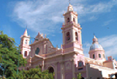

MUNICIPIOS DE LA PROVINCIA DEL GUAVIO

| NUMERO | NOMBRE |
|
1
2 3 4 5 6 7 |
Gachala
Gacheta Guasca Guatavita Junin La Calera Ubala |
Año de Fundación: 1593 Provincia de: Guavio Altitud: 1745 Temperatura: 19° Distancia a Bogotá: 99 (km) Número de Habitantes: 10509 |
HISTORIA DE SU CAPITAL: GACHETA
Gachetá en lengua Chibcha quiere decir detrás de nuestra labranza según Acosta Ortegón haciendo referencia a su dependencia de Guatavitá y al estar detrás de ésta. Los primitivos pobladores fueron los Chios de la Nacion Chibcha. El actual pueblo fue fundado por el Oídor Miguel de Ibarra por auto del 2 de abril de 1593; eran Curas Doctrineros Fray Alonso de la Asunción y el Padre Baltasar Romero.
"Represa de Guavio"
La población se consolidó con la construcción de nueva iglesia contratada por el Oídor Enriquez con el albanil Domingo Pérez. Las reconstrucciones de la Iglesia se encuentran las de 1728 siendo Cura Fernando de Guzmán y de 1755 por el Cura interino Diego Martín Terán. En la visita del Oídor Aróstegui y Escoto de 20 de enero de 1758 había 741 indios de ellos 116 tributarios. El padrón de vecinos dió un total de 1007 personas. En la visita del escribano José Prudencio Camacho por comisión del Oídor Moreno y Escandón el 18 de febrero de 1799, los vecinos eran 2.034 en 412 familias.
HECHOS NOTABLES
A mediados del siglo XVIII fue Cura Fray Ignacio María de Tordesillas, quien donó un órgano a la Iglesia y abrió Escuela de Música y Canto para los Indios. El 29 de julio de 1851 en el sitio de "Pajarito" el General Alejo Morales y Juan de Jesús Gutiérrez derrotaron en combate a las fuerzas de Pastor Ospina. El Secretario de Gobierno de Cundinamarca en su informe de 1859 decía que Gachetá se incendió el 27 de diciembre del año anterior. "Y no quedo sino un motón de cenizas en el lugar en que antes existía el alegre pueblo".
"Municipio de Gacheta" La actual Iglesia fue contruída por el Párroco Abdón López de 1927 a 1931, a quien en la plaza principal se le erigió un busto en reconocimiento a su meritoria obra.
